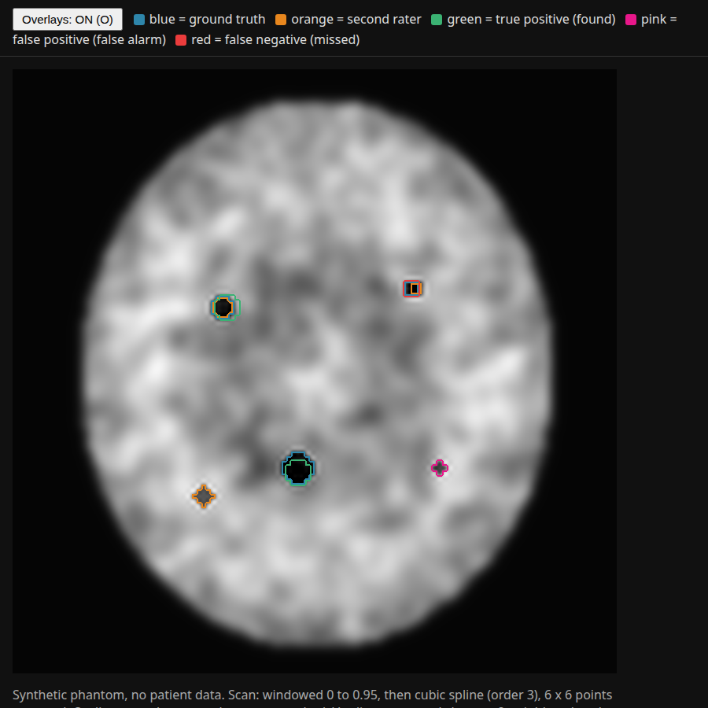

Masks over an MRI slice: blue ground truth, orange second rater, green found, pink false alarm, red missed; window, cubic upsampling, PNG
Aussage
- Five roles, five colours, on every page, figure and film frame: ground truth (reference, rater 1) blue (46, 134, 171); second rater orange (232, 135, 30); true positive green (59, 178, 115); false positive pink (232, 23, 138); false negative red (235, 60, 60). The colours are never reused for something else; a layer that is none of the five gets a sixth colour and its own legend line.
- A legend with words on every picture: colour name = role. Never colour alone.
- Outlines, not fills, as a separate transparent picture, so that the lesion stays visible and the switch "Overlays: ON/OFF (O)" hides them all.
- Picture quality: window first, then enlarge with a cubic spline (order 3) in the generator, at least 3 points per voxel, main view at least 768 points wide; masks are enlarged by repeating voxels, never smoothed; counts and volumes are computed on the native voxels; lossless PNG, no JPEG; shown at its own size.
- This replaces yellow for false alarms in new pages. The older entries of this area and the shared viewer generator still say and draw yellow for a false alarm and use another blue (66, 150, 255) for the reference; they describe the generator as it is. Whether the generator is changed is an open decision of the user (2026-11-24). Pages already delivered are not recoloured.
- The rule is packed as an Agent Skill with code:
tools/skills/mri-overlay-pages (
overlay.py: colour table, verdict by touching clusters, windowed cubic upsampling, outline PNG, legend;cubic_up.jsfor pages that carry the raw slices).

Synthetic phantom, every value invented, no scan; made with overlay.py --demo on 2026-11-24.
Trägt
- User rule 2026-11-24 for the colour names and roles, and for PNG in the quality of the reworked trainers.
- Own test 2026-11-24 on a synthetic phantom (no scan): demo page looked at as a screenshot and as enlarged crops,
all five roles readable, outlines crisp, switch works. numpy 2.4.6 (https://numpy.org), scipy 1.17.1
(
ndimage.zoom, order 3, https://docs.scipy.org/doc/scipy/reference/generated/scipy.ndimage.zoom.html), Pillow 13.0.0 (https://pillow.readthedocs.io), Chromium headless. - Browser-side cubic upsampling:
cubicUpfrom the public WMH trainer, MIT, commit 06e8190 (https://github.com/mendeltem/wmh_trainer), own build 2026-11-23/24. - Window first and PNG: qc-slice-images-png-window-aspect.
Trägt nicht
Not tested on a real scan yet. The exact RGB values of red and blue and the placing of the outlines (rater marks as a ring inside the mask, verdicts as a ring around it, the second rater one step further in on a shared lesion) were chosen by the author of the skill, not by the user. Pink and red are close for some colour-vision deficiencies; the legend words and the different ring positions carry the difference, this was not tested with affected readers. PNG makes pages larger than JPEG.
Bruchindikator
A rater confuses pink and red on a real page; a one-voxel lesion disappears under its ring at the usual scale; the user names other colours.
Ablesung
Take the colours from COL in overlay.py, never from memory. Before delivery: screenshot of the page, an enlarged
crop of a small lesion, and a check that every role on the page is in the legend.